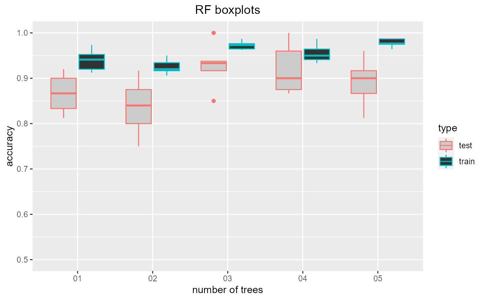
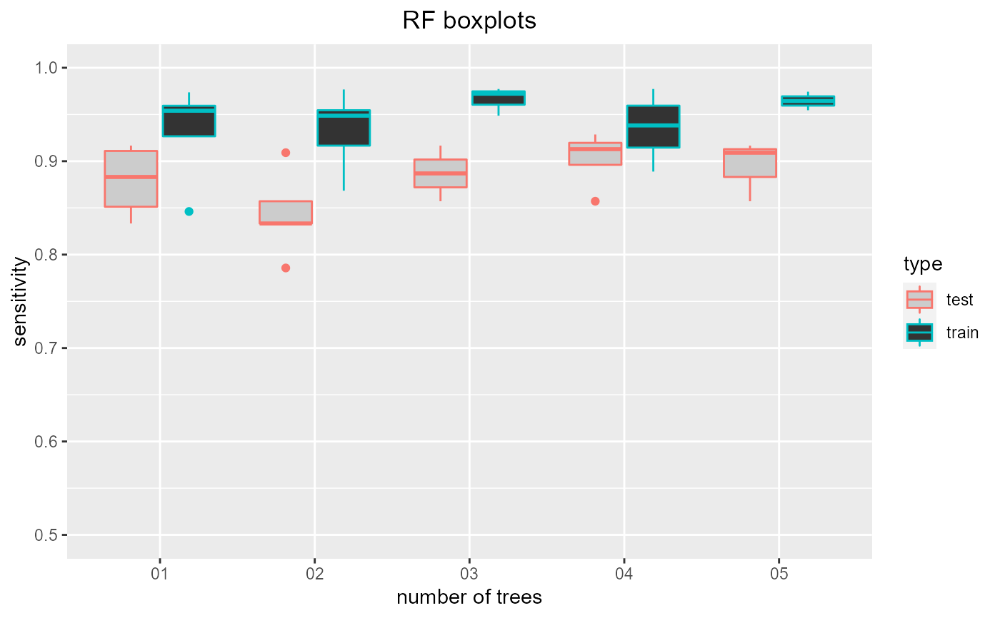
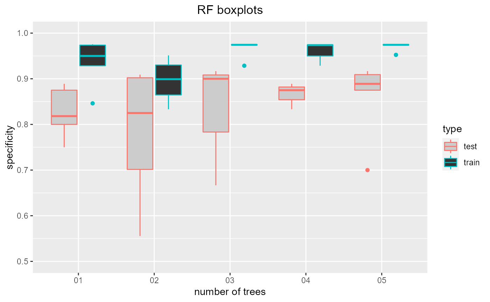

selectrfnumtrees.RdTuning number of trees hyperparameter. Trains random forests with a range of number of trees so the optimal number can be identified (using the resulting plot) with cross validation
selectrfnumtrees( data, maxnum = 100, title = "", showplots = T, output_prefix = "" )
| data | Dataset: dataframe containing classification column and all other column features. Both the training and test datasets will be taken from this dataset. |
|---|---|
| maxnum | Maximum number of trees to be considered. All numbers between 1 and maxnum will be considered. Default: 100. |
| title | Title to be used for the resulting boxplot |
| showplots | T if plots should be shown in standard output, F is plots should be saved as jpg files. Default: T. |
| output_prefix | Prefix used for saving plots. If showplots==F then plots are saved here. Otherwise, standard output. |
Dataframe containing test and training accuracy, sensitivity and specificity
data = read.csv(paste(system.file('samples/subsamples', package = "feamiR"),'/sample0.csv',sep='')) data = rbind(head(data,50),tail(data,50)) data$classification = as.factor(data$classification) data = data[,2:ncol(data)] selectrfnumtrees(data,5,'RF boxplots')#> num_trees accuracy sensitivity specificity type #> 1 01 0.9000000 0.9090909 0.8888889 test #> 2 01 0.9125000 0.8461538 0.9756098 train #> 3 02 0.7500000 0.9090909 0.5555556 test #> 4 02 0.9500000 0.9487179 0.9512195 train #> 5 03 0.8500000 0.0000000 0.6666667 test #> 6 03 0.9625000 0.9487179 0.9756098 train #> 7 04 0.9000000 0.9090909 0.8888889 test #> 8 04 0.9500000 0.9230769 0.9756098 train #> 9 05 0.9000000 0.9090909 0.8888889 test #> 10 05 0.9750000 0.9743590 0.9756098 train #> 11 01 0.8125000 0.8333333 0.8000000 test #> 12 01 0.9523810 0.9545455 0.9500000 train #> 13 02 0.8750000 0.8333333 0.9000000 test #> 14 02 0.9166667 0.9545455 0.8750000 train #> 15 03 0.9375000 0.0000000 0.9000000 test #> 16 03 0.9761905 0.9772727 0.9750000 train #> 17 04 1.0000000 0.0000000 0.0000000 test #> 18 04 0.9642857 0.9772727 0.9500000 train #> 19 05 0.8125000 0.0000000 0.7000000 test #> 20 05 0.9642857 0.9545455 0.9750000 train #> 21 01 0.8666667 0.8571429 0.8750000 test #> 22 01 0.9411765 0.9534884 0.9285714 train #> 23 02 0.8000000 0.8571429 0.7500000 test #> 24 02 0.9058824 0.9767442 0.8333333 train #> 25 03 0.9333333 0.8571429 0.0000000 test #> 26 03 0.9647059 0.0000000 0.9285714 train #> 27 04 0.8666667 0.8571429 0.8750000 test #> 28 04 0.9411765 0.9534884 0.9285714 train #> 29 05 0.8666667 0.8571429 0.8750000 test #> 30 05 0.9764706 0.0000000 0.9523810 train #> 31 01 0.8333333 0.9166667 0.7500000 test #> 32 01 0.9736842 0.9736842 0.9736842 train #> 33 02 0.9166667 0.8333333 0.0000000 test #> 34 02 0.9342105 0.8684211 0.0000000 train #> 35 03 0.9166667 0.9166667 0.9166667 test #> 36 03 0.9868421 0.0000000 0.9736842 train #> 37 04 0.8750000 0.9166667 0.8333333 test #> 38 04 0.9868421 0.0000000 0.9736842 train #> 39 05 0.9166667 0.9166667 0.9166667 test #> 40 05 0.9868421 0.0000000 0.9736842 train #> 41 01 0.9200000 0.0000000 0.8181818 test #> 42 01 0.9200000 0.0000000 0.8461538 train #> 43 02 0.8400000 0.7857143 0.9090909 test #> 44 02 0.9200000 0.9166667 0.9230769 train #> 45 03 1.0000000 0.0000000 0.0000000 test #> 46 03 0.9733333 0.9722222 0.9743590 train #> 47 04 0.9600000 0.9285714 0.0000000 test #> 48 04 0.9333333 0.8888889 0.9743590 train #> 49 05 0.9600000 0.0000000 0.9090909 test #> 50 05 0.9866667 0.0000000 0.9743590 train